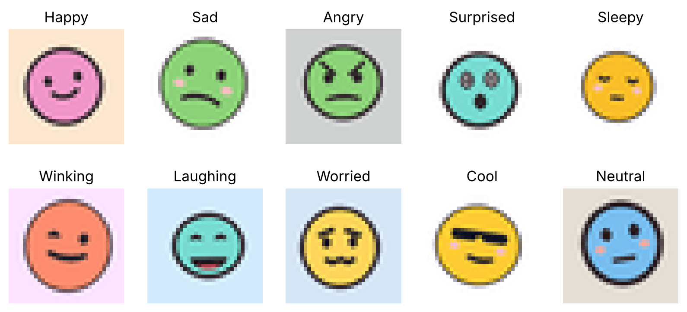

A short introduction. Each section below has its own video: the idea first, then the matching notebook steps. Captions are built in.
By the end of today you can:
- explain why the Mood Machine learns from examples instead of following rules
- explain how a computer sees a colour picture as numbers
- say whether a task uses supervised, unsupervised or reinforcement learning
Rules or Examples?
These are the faces the Mood Machine will learn to read. There are ten moods.

Try this
Write a rule that a computer could follow to decide if a face is Happy. Plain English is fine.
Then test it against the other faces:
- Does your rule also say "Happy" for the Winking and Laughing faces? They smile too.
- Would it still work if the face were tilted, or on a different coloured background?
- Now write a rule for Worried. Is it easier or harder?
What usually happens
"If the mouth curves up, it's happy" sounds easy. But a computer only sees dots of colour. It doesn't know which dots are the mouth. Winking and Laughing faces smile too, and tilting a face moves every dot. Nobody could write a rule for every possible face.
Machine learning turns this round. You don't write the rules. You give the computer thousands of example faces, each with the right answer attached, and it works out its own rules by spotting patterns. The right answer attached to each example is called a label.
You have probably used machine learning today without noticing: a phone unlocking when it sees your face, an email service catching junk mail, a video app choosing what to show you next.
A Picture Is Just Numbers
To you, a picture is a face. To a computer, it's a grid of tiny squares called pixels. Every face in this project is 32 pixels wide and 32 pixels tall: 1,024 pixels.
Each pixel's colour is a mix of three amounts of light: red, green and blue. Each amount is a number from 0 (none) to 1 (full).
| Colour | Red | Green | Blue |
|---|---|---|---|
| Black | 0 | 0 | 0 |
| White | 1 | 1 | 1 |
| Pure red | 1 | 0 | 0 |
| Yellow (red + green) | 1 | 1 | 0 |
| Pink, like the face below | 0.93 | 0.58 | 0.77 |
So a colour picture is three grids of numbers, one for each colour. These are called colour channels.
Key idea
One face = 32 x 32 pixels x 3 colours = 3,072 numbers. When the Mood Machine "looks at" a face, it does maths on 3,072 numbers. It never sees eyes or a mouth: only numbers in positions.
Think
- What are the red, green and blue numbers for a grey pixel halfway between black and white?
- A colour photo is 100 pixels wide and 50 pixels tall. How many numbers describe it?
- Two faces are identical except that one is shifted one pixel to the right. To you they look the same. To the computer, how many of the 3,072 numbers might have changed?
Answers
- 0.5, 0.5, 0.5.
- 100 x 50 x 3 = 15,000.
- Potentially almost all of them, because every number now describes a different spot on the face. This is one reason the Mood Machine finds some faces hard, as you'll see in Session 10.
Three Ways a Machine Can Learn
The Mood Machine learns from faces that come with the right answer. That's one of three ways a machine can learn.
| Kind of learning | What the data looks like | Example |
|---|---|---|
| Supervised | Every example has the right answer (a label) | The Mood Machine: faces labelled with their mood |
| Unsupervised | No answers at all. The system finds patterns or groups by itself | Sorting shoppers into groups that buy similar things |
| Reinforcement | No answers, but a score after each action | A program learning a game by playing it over and over |
Supervised learning comes in two types. If the answer is a category, like a mood, it's classification. If the answer is a number, like a height, it's regression. You'll do regression in Sessions 4 and 5.
Reinforcement learning has its own words. The learner is the agent. The world it acts in is the environment. After each action it gets a reward (or a penalty), and over time it learns a policy: a way of choosing actions that earns the most reward.
There's one more term you need. A neural network is a large calculation made of many simple parts called neurons, and it is what the Mood Machine is. Machine learning that uses neural networks with many layers is called deep learning. It works especially well on pictures, sound and text, where the patterns are hard to describe in rules. You'll look inside a neuron in Session 3.
Think
Make up your own example of each kind of learning. For your reinforcement learning example, name the agent, its actions, and what it gets rewarded for.
Check Your Understanding
Check your understanding
1. Explain the difference between normal programming and machine learning. Use the Mood Machine as your example. 2 points
2. A robot learns to walk by trying movements. It gets a point each time it moves forward without falling. Which kind of learning is this? Explain how you know. 2 points
3. A shop wants to sort its customers into groups with similar buying habits, without deciding the groups in advance. Which kind of learning should it use? Explain why. 2 points
What a full answer includes
1 In normal programming a person writes the rules, such as "if the mouth curves up, say Happy". In machine learning the computer works out its own rules from lots of labelled examples, such as thousands of faces with their moods.
2 Reinforcement learning. The robot isn't given right answers. It takes actions and gets a reward (a point) for good ones.
3 Unsupervised learning. There are no labels and the groups aren't known in advance, so the system has to find the groups itself.